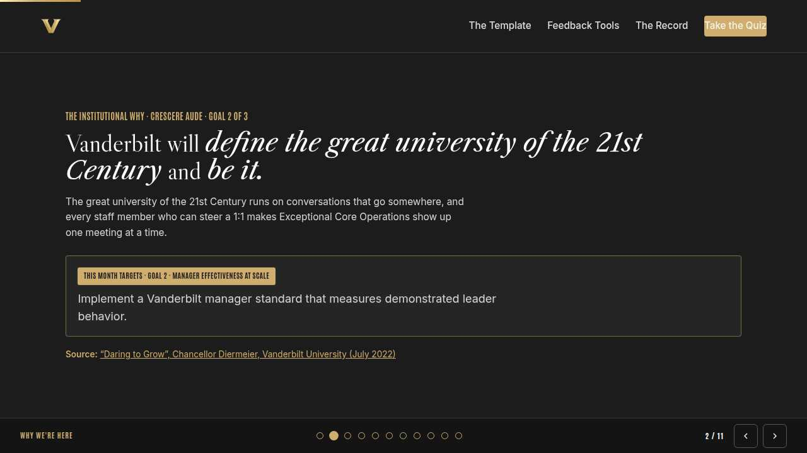
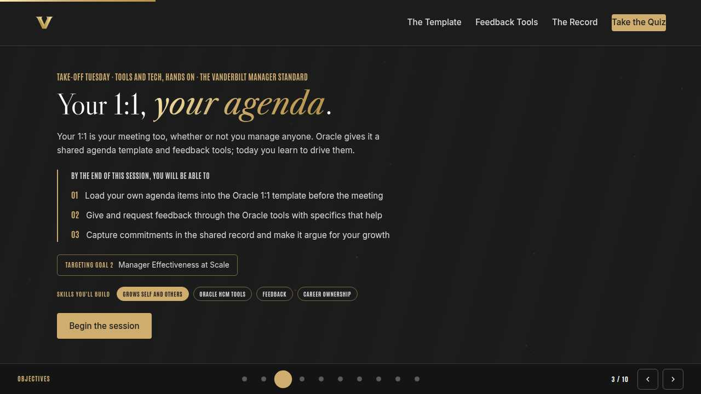
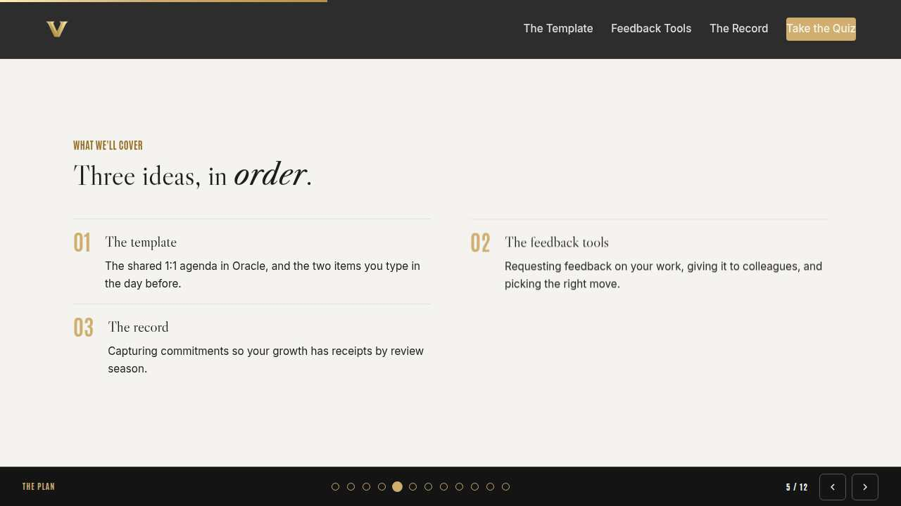
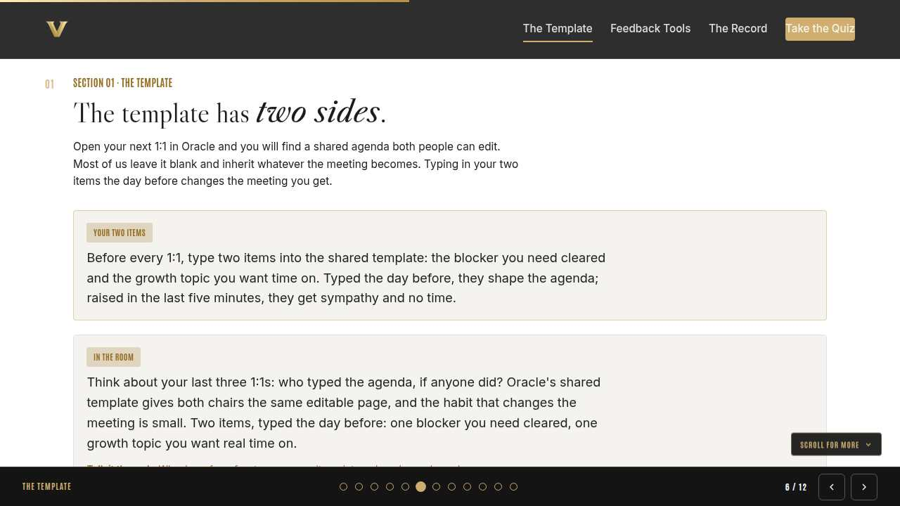
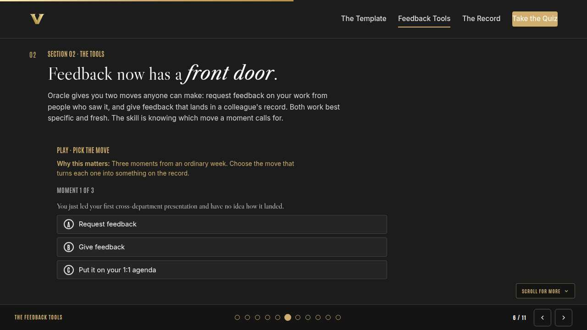
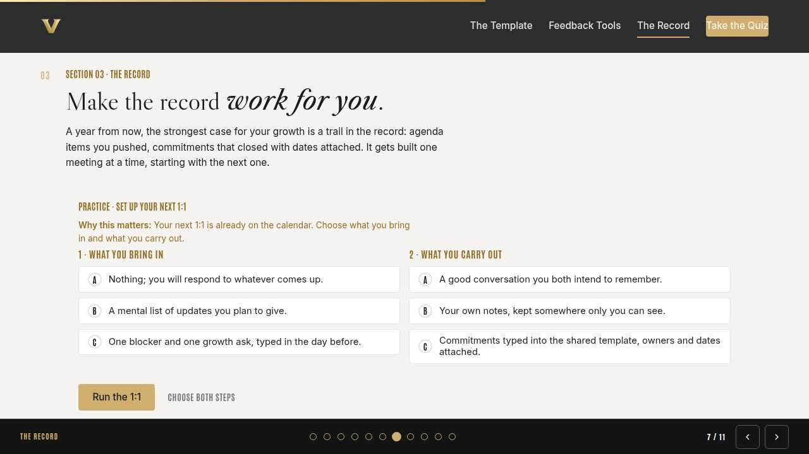
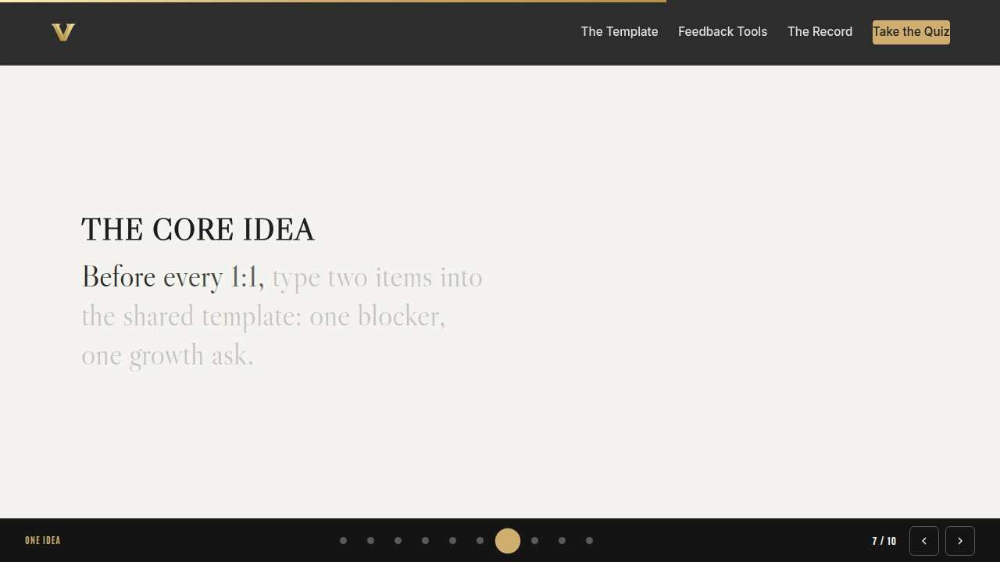
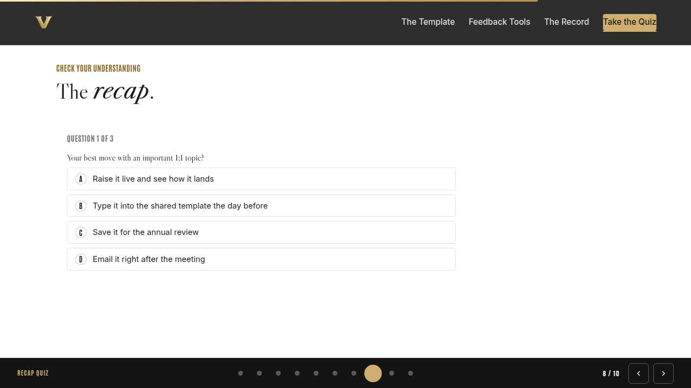
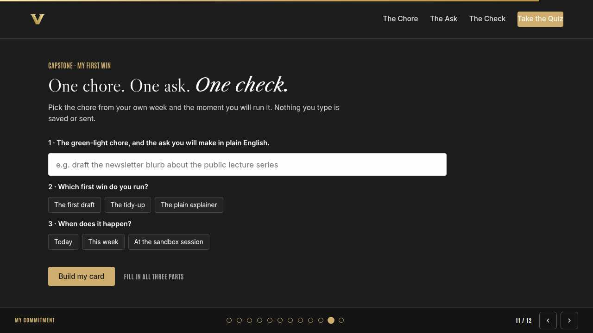
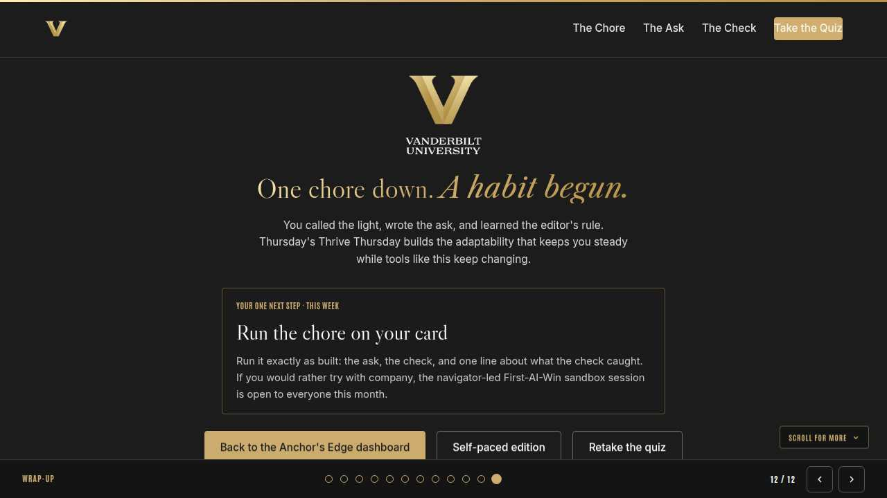

Vanderbilt · Anchor's Edge · ATD facilitator guide · print edition
Own Your 1:1, the facilitator guide

Run of show
| Screen | Full (min) | Core (min) |
|---|---|---|
| Welcome / QR | 2 | 1 |
| Why we're here | 2 | 1 |
| Objectives | 1 | 1 |
| Agenda | 1 | skip |
| The template | 9 | 6 |
| The feedback tools | 11 | 8 |
| The record | 9 | 6 |
| The core idea | 1 | skip |
| Recap quiz | 4 | 3 |
| Capstone commitment | 4 | 3 |
| Closing | 1 | 1 |
| Total | 45 | 30 |
The goal this month serves
Goal 2, Manager Effectiveness at Scale.
Audience
All Vanderbilt staff in the Anchor's Edge weekly rhythm; nobody is assumed to manage anyone. Works for 6 to 40 on a call; breakouts run in pairs. Oracle access helps, and the session works fine watching the walkthrough.
Room setup
Virtual, instructor led: camera on, deck link in chat, breakouts of 2 available. Learners follow on their own screens via the welcome-slide link or QR. Nothing typed into the deck is saved or sent.
Materials
- Meeting platform with screen share and breakout rooms; deck link ready to paste in chat
- Facilitator machine with the facilitator edition open; notifications off
- Learners on their own devices with the learner link
- Chat open for share-outs; the capstone copy button pastes there cleanly
A week before
- Run the learner edition start to finish and do every interaction honestly; you will demo at least one live.
- Read this month's theme page on the Anchor's Edge dashboard so the goal tie-in is fluent.
- Send the invite with the learner link and one line on what to bring.
The day before
- Test screen share with the facilitator edition; confirm the notes rail is readable.
- Open the learner link on a second device; the QR must land there.
- Run the section interactions once so you can drive them without reading.
30 minutes before
- Welcome slide up as people join; link pasted in chat.
- Close every other tab; silence the machine.
- Breakout rooms pre-configured in pairs.
When things go sideways
If Screen share or the site fails mid-session: Paste the learner link in chat and narrate from your own browser; every interaction runs on learner devices without the share.
If Breakout rooms are unavailable: Run the breakout prompts as 60-second chat storms: everyone types their answer at once, you read the best three aloud.
If Learners lack Oracle access or cannot open it during the session: Nothing requires live Oracle. Demo from your own screen, and have people draft their agenda item and feedback lines in the deck; entering them takes two minutes after the call.
If Someone starts naming a colleague while describing feedback they want to give: Redirect warmly: roles, never names. The specifics belong in the tool, addressed to the person; the room only needs the shape of the example.
Tough questions, ready answers
Q: What if my manager never opens the template?
Your entry still works: it frames the meeting when you bring it up, and it timestamps that you raised it. Most managers start using the template the week their reports do. If it stays ignored, raise that kindly as its own agenda item.
Q: Is feedback I give in Oracle visible to the person and their manager?
Treat everything in the tool as on the record; that is the point, because recorded recognition travels. Write anything you give as words you would happily say with the person in the room, since functionally you are.
Q: I don't manage anyone. Is this month really for me?
Entirely. The manager standard tells you what to expect from your own manager, and the tools are two-sided by design; this month lands only if both chairs use them. If you are curious where the manager side goes, the New Manager Foundations course on LinkedIn Learning is open to everyone.
Copy-paste templates
Pre-work invite (paste into the calendar invite)
Subject: Tuesday, 45 minutes on making Oracle 1:1s work for you. Before the session, think of one item you keep meaning to raise with your manager. You will never be asked to share it. Live and interactive; have the session link open on your own screen.
7-day pulse (send one week after)
Subject: Did it make the record? Three lines, reply whenever: 1) Did your item make it into a 1:1 template? 2) Did you send or give one piece of feedback in Oracle? 3) What changed because it was on the record?
After the session
Seven days out, send the pulse: 'Did your item make it into a 1:1 template? Did you send or give one piece of feedback through Oracle? What changed because it was on the record?' Count of template entries and feedback events is the month's usage signal.
Welcome / QR Full 2 min · Core 1
Get everyone into the deck on their own screen and set the tone: 45 minutes, live, hands on.
Say
“Welcome to Take-Off Tuesday. Scan the code or click the link in chat so this session runs on your screen too. Forty-five minutes, one focus: The 1:1 templates and feedback tools inside Oracle, from your side of the table.”
Do
- Slide up as people join; link pasted in chat every few minutes.
- State the norm once: type into your own screen, nothing you enter is saved or sent.
Watch for: People lurking without the deck open. The interactions only land if the deck is on their screen.
Transition: “Before the topic, thirty seconds on why Vanderbilt is asking for this hour.”

Why we're here Full 2 min · Core 1
Anchor the session in the Chancellor's charge and name the goal this month serves, inside one minute.
Say
“One sentence from the Chancellor sits over everything we do: Vanderbilt will define the great university of the 21st Century and be it. The great university of the 21st Century runs on conversations that go somewhere, and every staff member who can steer a 1:1 makes Exceptional Core Operations show up one meeting at a time. This month serves Goal 2, Manager Effectiveness at Scale.”
Do
- Read the mission line slowly, once; name the goal, once.
- No discussion here; the whole slide is under a minute.
Transition: “Here is what you will be able to do in 45 minutes.”

Objectives Full 1 min · Core 1
Set the contract for the session in under a minute.
Say
“By the end of this session: load your own agenda items into the oracle 1:1 template before the meeting; give and request feedback through the oracle tools with specifics that help; capture commitments in the shared record and make it argue for your growth. That is the whole contract.”
Do
- Read the three objectives briskly; do not elaborate yet.
Transition: “Three stops to get there.”

Agenda Full 1 min · Core skip
Show the path so the room can pace itself.
Say
“Three stops: the template, the feedback tools, the record. Each one has something to play with, so keep the deck open.”
Do
- Point once at each stop; ten seconds each.
Transition: “Stop one.”
Core path: Core: skip the read-through, gesture at the slide in passing.

The template Full 9 min · Core 6
Get every learner to load their own items into the Oracle 1:1 template before the meeting.
Say
“Quick show of honesty in chat: when your last 1:1 started, whose agenda was it? For most of us the honest answer is my manager's, or nobody's. Steven Rogelberg has spent years studying 1:1s, and his advice in HBR is blunt: the meeting works when the direct report's topics lead it. Oracle gives you the page for exactly that, a shared template both people can edit. The habit that pays best is typing your two items into it the day before, one blocker and one growth topic.”
Do
- Show the template fields on screen for thirty seconds; keep it to where your items go.
- Walk the In the room context; let the whose-agenda question sit. No quiz in the live room.
- Open the discussion prompt; take two or three voices before moving on.
- Run the breakout on the saved-up item.
Ask
“What stops people from adding their own agenda items?”
Expect:
- Feels like overstepping
- Never occurred to them
- Assume the manager owns the meeting
Respond: All common, all fixable. The template design is the permission: the field exists for you, and managers consistently say they want the items.
Debrief: Two items, typed the day before: one blocker, one growth ask. That habit alone changes what 1:1s do for you.
Watch for: Learners whose managers do not yet use the template. Acknowledge it and stay practical: your typed items work even when you are the only one typing.
Transition: “The template covers the meeting. Feedback has its own front door.”
Core path: Core: skip the breakout; ask for saved-up items in chat instead.

The feedback tools Full 11 min · Core 8
Teach when to request feedback, when to give it, and when a topic belongs on the 1:1 agenda instead.
Say
“Oracle gives everyone two feedback moves. Request: you ask people who saw your work how it landed, and their answers join your record. Give: you put specific recognition or input into a colleague's record, where it travels further than chat ever will. The skill is matching the moment to the move, so let's practice on three.”
Do
- Run Pick the move live; everyone plays on their own screen.
- After round two, ask in chat who has ever received recorded feedback from a peer; notice the energy.
- Run the breakout on the colleague whose work deserved a recorded give.
Ask
“Why does recorded feedback beat the same words in chat?”
Expect:
- It reaches their manager
- It survives to review season
- Chat scrolls away
Respond: All three. The words might be identical; the address is different. Feedback in the record shows up when decisions about people get made.
Debrief: Request when you need eyes on your work. Give when a colleague earned it. Anything needing real discussion goes on the 1:1 agenda.
Watch for: Worry that requesting feedback signals weakness. Reframe it: asking specific people about specific work reads as someone serious about getting better.
Transition: “Templates and feedback both feed one thing: a record. The last section makes it work for you.”
Core path: Core: run the trainer, skip the breakout, take one voice on the chat question.

The record Full 9 min · Core 6
Convert template and feedback habits into a growth trail: agendas in, commitments out.
Say
“Play the long game for a second. A year from now, someone will ask what you have grown into, in a review or an internal interview. The strongest answer is a paper trail: agenda items you set, and commitments that closed with your name on them. Trails get built one meeting at a time, so let's set up your next one properly.”
Do
- Run Set up your next 1:1; give the room two minutes for both choices.
- Ask one volunteer to read their outcome aloud, weak or strong.
- Point at the pattern: typed beats mental, shared beats private.
Ask
“What does a shared commitment have that a private note does not?”
Expect:
- Both names on it
- It gets checked next meeting
- Nobody can misremember it alone
Respond: Right. A private note protects your memory; a shared commitment obligates two calendars. Growth lives in the second kind.
Debrief: The record is your career's paper trail. Feed it: items in before, commitments out after, feedback along the way.
Watch for: Anyone treating the record as surveillance. The frame is ownership: this is your trail, built by you, arguing for you.
Transition: “Quick recap, then you load your own next 1:1.”
Core path: Core: everyone runs the builder solo; skip the read-aloud.

The core idea Full 1 min · Core skip
Land the one sentence the session exists to install.
Say
“If you keep one sentence from today, this is it. Read it once, out loud: A 1:1 you prepared for is a meeting you co-own.”
Do
- Pause two beats after reading; the word animation carries it.
Transition: “The recap makes it stick.”
Core path: Core: pass through in stride; the sentence reads itself.

Recap quiz Full 4 min · Core 3
Score the learning while it is fresh; wrong answers are teaching moments, not failures.
Say
“Three questions, on your own screen. Answer honestly; the explanations are where the learning sticks.”
Do
- Give the room 90 seconds to run it individually.
- Ask for a show of results in chat: how many got 3 of 3?
- Read out the explanation for whichever question drew the most misses.
Watch for: Rushing past the why lines. The explanations carry the teaching.
Transition: “Now point it at your real week.”

Capstone commitment Full 4 min · Core 3
Convert the session into one named, dated action per person.
Say
“Now load the real thing. Your next 1:1 is on a calendar somewhere. Name the item you have been sitting on, pick your first move, pick your window, and build the card. Roles only, never names. Two minutes, quiet, go.”
Do
- Two quiet minutes; everyone builds their own card.
- Invite two or three volunteers to read their card aloud or paste it in chat.
- Remind: copy the card somewhere you will see it this week.
Watch for: Vague entries. Nudge for a name-able situation and a real date.
Transition: “Last slide.”

Closing Full 1 min · Core 1
End with the next step and where this thread continues.
Say
“You leave with a loaded template habit and two feedback moves that put your work on the record. Thursday's Thrive Thursday is the skill underneath every one of these tools: clarity, the kind of expectation-setting that sticks, whichever chair you sit in. Same time, same rhythm. See you there.”
Do
- Point at the next-step card; one sentence.
- Name the rest of the week's rhythm: the other sessions echo this month's theme.
Generated from facilitator/notes.json. The on-screen facilitator edition lives at ./ alongside this guide.